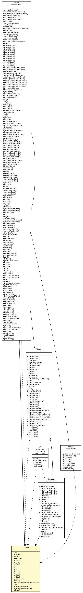

edu.umd.cs.piccolo.util
Class PBounds

java.lang.Object
 java.awt.geom.RectangularShape
java.awt.geom.Rectangle2D
java.awt.geom.Rectangle2D.Double
edu.umd.cs.piccolo.util.PBounds
java.awt.geom.RectangularShape
java.awt.geom.Rectangle2D
java.awt.geom.Rectangle2D.Double
edu.umd.cs.piccolo.util.PBounds
- All Implemented Interfaces:
- Shape, Serializable, Cloneable
public class PBounds
- extends Rectangle2D.Double
- implements Serializable
PBounds is simply a Rectangle2D.Double with extra methods that more
properly deal with the case when the rectangle is "empty". A PBounds
has an extra bit to store emptiness. In this state, adding new geometry
replaces the current geometry. A PBounds is emptied with the reset() method.
A useful side effect of the reset method is that it only modifies the fIsEmpty
variable, the other x, y, with, height variables are left alone. This is used
by Piccolo's layout management system to see if a the full bounds of a node
has really changed when it is recomputed. See PNode.validateLayout.
- See Also:
- Serialized Form
| Methods inherited from class java.awt.geom.Rectangle2D |
add, contains, contains, equals, getPathIterator, getPathIterator, hashCode, intersect, intersects, intersectsLine, intersectsLine, outcode, setFrame, union |
| Methods inherited from class java.awt.geom.RectangularShape |
contains, contains, getBounds, getCenterX, getCenterY, getFrame, getMaxX, getMaxY, getMinX, getMinY, intersects, setFrame, setFrame, setFrameFromCenter, setFrameFromCenter, setFrameFromDiagonal, setFrameFromDiagonal |
PBounds
public PBounds()
PBounds
public PBounds(PBounds aBounds)
PBounds
public PBounds(Rectangle2D aBounds)
PBounds
public PBounds(Point2D aCenterPoint,
double insetX,
double insetY)
PBounds
public PBounds(double x,
double y,
double width,
double height)
clone
public Object clone()
- Overrides:
clone in class RectangularShape
isEmpty
public boolean isEmpty()
- Overrides:
isEmpty in class Rectangle2D.Double
reset
public PBounds reset()
resetToZero
public PBounds resetToZero()
setRect
public void setRect(Rectangle2D r)
- Overrides:
setRect in class Rectangle2D.Double
setRect
public void setRect(PBounds b)
setRect
public void setRect(double x,
double y,
double w,
double h)
- Overrides:
setRect in class Rectangle2D.Double
add
public void add(double newx,
double newy)
- Overrides:
add in class Rectangle2D
add
public void add(Rectangle2D r)
- Overrides:
add in class Rectangle2D
add
public void add(PBounds r)
getOrigin
public Point2D getOrigin()
setOrigin
public PBounds setOrigin(double x,
double y)
getSize
public Dimension2D getSize()
setSize
public void setSize(double width,
double height)
getCenter2D
public Point2D getCenter2D()
moveBy
public PBounds moveBy(double dx,
double dy)
expandNearestIntegerDimensions
public void expandNearestIntegerDimensions()
inset
public PBounds inset(double dx,
double dy)
deltaRequiredToCenter
public PDimension deltaRequiredToCenter(Rectangle2D b)
deltaRequiredToContain
public PDimension deltaRequiredToContain(Rectangle2D b)
toString
public String toString()
- Overrides:
toString in class Rectangle2D.Double